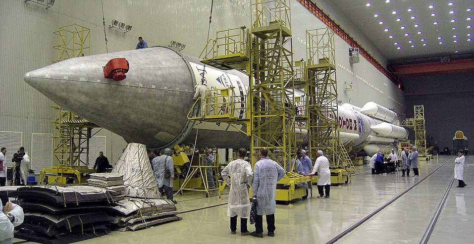

После распада СССР российская космонавтика оказалась в глубочайшем кризисе. В 1991 году было ликвидировано Министерство общего машиностроения, которое отвечало за всю ракетно-космическую промышленность — порядка 200 предприятий с замкнутым циклом производства. Финансирование сократилось в разы, заводы останавливались, молодые специалисты уходили из отрасли. Возникла реальная угроза потери уникальных компетенций и технологий.
25 февраля 1992 года вышел указ Президента о создании Российского космического агентства (ныне Роскосмос). Первым генеральным директором стал Юрий Коптев, которому предстояло сохранить отрасль в новых условиях. Агентство формировали буквально с нуля — в штат разрешили набрать всего 175 человек, а предприятия поначалу отказывались сотрудничать, считая попытку воссоздать систему управления безумием. Пришлось доказывать, что агентство нужно не для «руководства», а для координации и выживания.

Спасли отрасль три вещи. Во-первых, коммерческие запуски. 9 апреля 1996 года ракета «Протон» впервые стартовала с коммерческим грузом — спутником связи ASTRA-1F для европейского заказчика. Для продвижения на мировом рынке создали совместное предприятие с американской Lockheed Martin, и вскоре «Протон» стал одним из лидеров коммерческих пусков.
Во-вторых, международное сотрудничество. В 1992 году было подписано межправительственное соглашение с США, а затем началась программа «Мир — Шаттл». Американские астронавты полетели на станцию «Мир», российские космонавты — на шаттлах. Для НАСА это был бесценный опыт длительных полётов, а для России — не только политическое сближение, но и финансовое подспорье: контракт 1994 года предусматривал выделение более 334 миллионов долларов.
В-третьих, участие в создании Международной космической станции. 20 ноября 1998 года ракета «Протон» вывела на орбиту модуль «Заря» — первый элемент МКС. Россия строила ключевые модули, а корабли «Союз» на долгие годы стали единственным средством доставки экипажей.
По оценкам Юрия Коптева, за десятилетие с 1993 по 2003 год внебюджетные средства, полученные от коммерческих проектов, в полтора раза превысили бюджетное финансирование. Это позволило сохранить отрасль работоспособной и подготовить базу для развития в новом веке.
«Мы не имели права потерять то, что создавалось десятилетиями. Пришлось учиться выживать и работать по-новому».